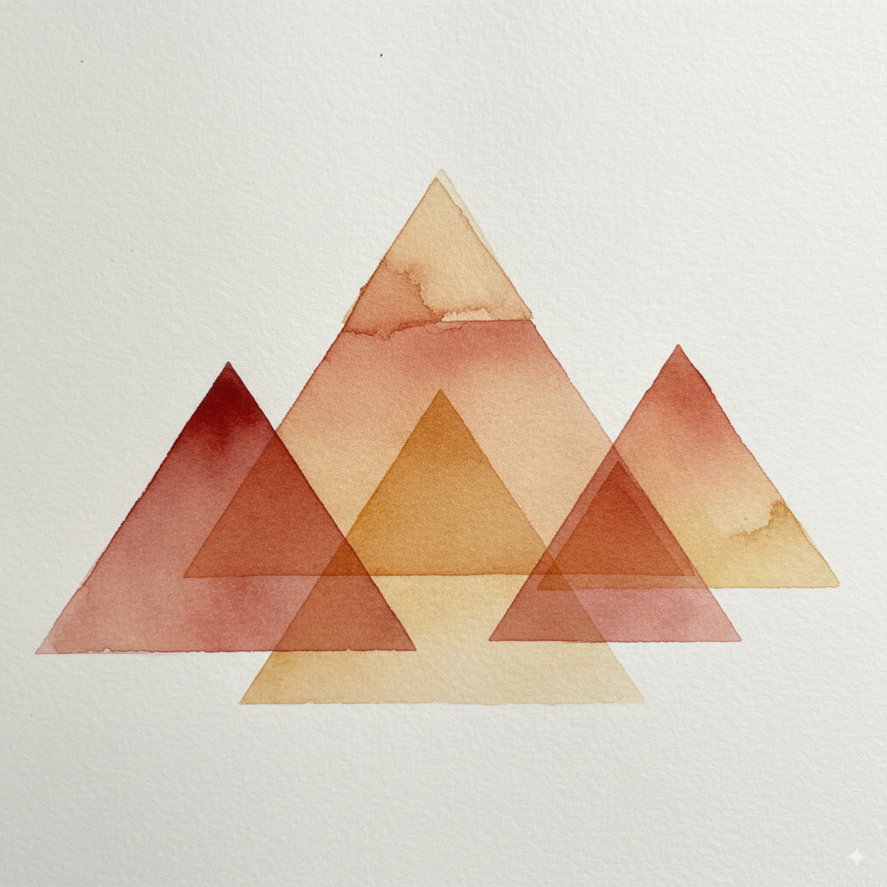

A Deep Dive into Feature Pyramid Networks for Object Detection

In the world of computer vision, one of the most persistent challenges is detecting objects that appear at vastly different scales within the same image. A model might easily spot a car filling the frame but completely miss a tiny car in the distance. The classic solution involved creating an image pyramid, resizing the input image into multiple scales and searching for objects at each level. While effective, this approach is computationally expensive, especially for modern deep learning models. In their 2017 paper, Lin et al. from Facebook AI Research introduced the Feature Pyramid Network (FPN), an elegant architecture that provides the benefits of a pyramid representation without the prohibitive cost.
{kind=link}
Abstract
{kind=link}
The abstract immediately sets the stage by identifying a fundamental problem in object detection: recognizing objects at various scales. The authors remind us of the classic solution, the feature pyramid, but highlight why modern deep learning models have largely abandoned it: it’s too slow and memory-hungry.
The core insight of the paper is presented as an elegant solution to this dilemma. Instead of building an image pyramid by resizing the input image multiple times, the authors propose to use the pyramid that naturally exists inside a Convolutional Network (ConvNet).
Let’s break that down:
- Inherent Pyramidal Hierarchy: As an image passes through a ConvNet, it goes through a series of layers. Pooling or strided convolutional layers progressively shrink the spatial dimensions of the feature maps. For example, an input of 224x224 might become 112x112, then 56x56, and so on. This creates a natural pyramid of feature maps within the network.
- The Problem with the Natural Pyramid: The issue is that while the final, small feature maps are rich in semantic information (they know what object is present), they have poor spatial resolution (they’ve lost information about exactly where it is). Conversely, the initial, large feature maps have precise spatial information but are semantically weak (they only represent low-level features like edges and textures). Simply making predictions from these different layers doesn’t work well, especially for small objects.
This is where the authors’ key architectural innovation comes in. They propose a Feature Pyramid Network (FPN) that combines the best of both worlds. It uses a “top-down pathway” to carry the strong semantic information from the deep layers back to the shallower layers, and “lateral connections” to merge this with the high-resolution spatial information from those shallower layers. The result is a set of feature maps that are rich in semantic meaning at every single scale.
The authors then state their results in a way that underscores the power and practicality of their method:
- They integrated FPN into a standard Faster R-CNN detector.
- They achieved state-of-the-art results on the challenging COCO benchmark, even beating the winners of the 2016 competition.
- They did this “without bells and whistles,” meaning the improvement comes directly from the FPN architecture itself, not from other common tricks.
- The model runs at 6 FPS, making it a practical and efficient solution.
In essence, the abstract promises a method that delivers the power of a feature pyramid without the high computational cost, solving a long-standing problem in a simple and effective way.
1. Introduction
{kind=link}
The Fundamental Challenge of Scale
The authors begin by framing the core problem they aim to solve, a classic and difficult one in computer vision: how can a model detect an object regardless of its size in the image? The traditional and intuitive way to solve this is by using an image pyramid. This simply means taking the input image and repeatedly resizing it to create a stack of images at different scales, from large to small.
{kind=link}
From this image pyramid, a featurized image pyramid is built. As illustrated in Figure 1(a) of the paper, this involves running a feature extractor (in the past, this would have been something like SIFT or HOG; with deep learning, it’s a ConvNet) on each and every level of the image pyramid.
The power of this technique lies in a property called scale-invariance. Imagine a detector trained to find a cat that is 100x100 pixels. If it’s given an image with a tiny 25x25 pixel cat, it will likely fail. But in an image pyramid, that small cat might appear as a 100x100 pixel cat in one of the upscaled versions of the image. Conversely, a giant 400x400 cat might be scaled down to 100x100 in a different level of the pyramid.
The key idea is that the detector only has to be good at recognizing the object at a single, canonical scale. The pyramid structure transforms the problem of handling scale variation into simply choosing the right pyramid level to look at. This is what the authors mean when they say an object’s scale change is “offset by shifting its level in the pyramid.” This robust approach formed the bedrock of many successful object detection systems before the deep learning era.
The Rise of ConvNets and the Compromise of Single-Scale Detection
{kind=link}
{kind=link}
“Featurized image pyramids were heavily used in the era of hand-engineered features [5, 25]. … For recognition tasks, engineered features have largely been replaced with features computed by deep convolutional networks (ConvNets) [19, 20].”
The authors first provide some historical context. Before deep learning, object detectors relied on hand-engineered features like HOG (Histograms of Oriented Gradients) and SIFT (Scale-Invariant Feature Transform). These feature extractors were clever, but not very robust to changes in scale. To get good results, detectors like DPM (Deformable Part Models) had to process the image at many different scales (e.g., “10 scales per octave,” meaning 10 different image sizes just to cover a doubling of object size). This made them powerful but very slow.
Then came the deep learning revolution. ConvNets replaced these hand-engineered features for two key reasons:
- They learn higher-level semantics: Instead of just capturing simple patterns like edges and gradients, ConvNets learn a hierarchy of features. Deeper layers can represent complex concepts like “a wheel” or “an eye,” making them far more powerful for recognition.
- They are more robust to scale variance: Thanks to mechanisms like pooling layers and large receptive fields, a ConvNet can recognize an object even if its size varies a bit.
“Aside from being capable of representing higher-level semantics, ConvNets are also more robust to variance in scale and thus facilitate recognition from features computed on a single input scale [15, 11, 29] (Fig. 1(b)). But even with this robustness, pyramids are still needed to get the most accurate results.”
This improved robustness led to a major simplification in object detection architectures. Models like Fast R-CNN and Faster R-CNN abandoned the computationally expensive image pyramid. Instead, they adopted a much faster approach: feed a single, fixed-size image to the ConvNet and extract features from just one of its layers (as shown in Figure 1(b)). This was a practical trade-off, sacrificing some accuracy for a massive gain in speed.
{kind=link}
However, the authors deliver a crucial punchline: this trade-off is a compromise. The highest-performing models in top competitions like ImageNet and COCO still use the old-school, slow-and-steady approach of featurized image pyramids at test time. This is strong evidence that, while single-scale detection is fast, it leaves accuracy on the table.
“The principle advantage of featurizing each level of an image pyramid is that it produces a multi-scale feature representation in which all levels are semantically strong, including the high-resolution levels.”
This sentence perfectly captures the “gold standard” that the authors are trying to replicate. When you run a powerful ConvNet on every level of an image pyramid, you get a set of feature maps at different scales. Crucially, every single one of these feature maps is semantically strong, because the full power of the ConvNet was used to create it. The high-resolution feature maps are just as “smart” as the low-resolution ones. This is the ideal scenario, but as we’ll see next, it comes with a heavy price.
The Prohibitive Cost of Image Pyramids
{kind=link}
{kind=link}
“Nevertheless, featurizing each level of an image pyramid has obvious limitations. Inference time increases considerably (e.g., by four times [11]), making this approach impractical for real applications.”
While using a featurized image pyramid gives the best accuracy, it comes with a crippling downside: it is incredibly slow. Inference time refers to the time it takes for a trained model to make a prediction on a new image. If you build an image pyramid with four different scales, you have to run the entire, massive ConvNet four separate times. This linear increase in computation makes the approach far too slow for real-world applications like autonomous driving or video analysis where speed is essential.
“Moreover, training deep networks end-to-end on an image pyramid is infeasible in terms of memory…”
If inference is slow, training is even worse. In fact, the authors state it is infeasible. During training, a network not only performs a forward pass through the data but also a backward pass (backpropagation) to calculate gradients and update its weights. This requires storing the “activations” (the output feature maps) from every layer in GPU memory. Modern GPUs have a limited amount of memory, and trying to process a whole batch of multi-scale image pyramids at once would cause it to run out of memory almost instantly.
“…and so, if exploited, image pyramids are used only at test time [15, 11, 16, 35], which creates an inconsistency between train/test-time inference.”
Because end-to-end training on an image pyramid is impossible, researchers have relied on a workaround. They train the model on single-scale images (which is memory-efficient) and then, at test time, they apply this model to a multi-scale image pyramid.
This creates a significant problem: a train-test discrepancy. The model is being evaluated in a way it was never trained. It has learned to detect objects at the scale distribution present in the single-scale training images, but it’s being tested on objects at different scales created by the pyramid. This inconsistency can prevent the model from achieving its full potential.
For all these reasons—slow inference, infeasible training, and the train-test discrepancy—the default configurations of influential models like Fast R-CNN and Faster R-CNN abandoned image pyramids entirely in favor of a faster, single-scale approach. This set the stage for a new solution, one that could provide the power of a pyramid without its crippling costs.
The ‘Free’ Pyramid Inside Every ConvNet
{kind=link}
“However, image pyramids are not the only way to compute a multi-scale feature representation. A deep ConvNet computes a feature hierarchy layer by layer, and with subsampling layers the feature hierarchy has an inherent multi-scale, pyramidal shape.”
Having established that building an image pyramid is too expensive, the authors present a powerful alternative that has been hiding in plain sight. Every standard deep ConvNet, like a ResNet or VGG, already contains a pyramid. This is the in-network feature hierarchy.
As an image is processed through a ConvNet, it passes through sequential layers. Some of these layers, like max-pooling or strided convolutions, are subsampling layers. Their job is to reduce the spatial dimensions (height and width) of the feature maps. For example, a 256x256 feature map might become 128x128, then 64x64, and so on, as it gets deeper into the network. This process naturally creates a pyramid of feature maps of decreasing size, all from a single input image and a single forward pass. This pyramid is computationally “free” because the network has to compute these feature maps anyway.
This seems like a perfect solution, but there’s a major catch.
“This in-network feature hierarchy produces feature maps of different spatial resolutions, but introduces large semantic gaps caused by different depths. The high-resolution maps have low-level features that harm their representational capacity for object recognition.”
This is the crucial problem with the “free” pyramid. The different levels of this pyramid are not created equal. There is a large semantic gap between them.
- Shallow Layers (e.g., conv2): These early layers produce large, high-resolution feature maps. However, they are semantically weak. They represent very simple, low-level features like edges, corners, and textures. They have precise location information (“there is an edge here”) but have no concept of what object those edges belong to.
- Deep Layers (e.g., conv5): These final layers produce small, low-resolution feature maps. They are semantically strong. Having processed the entire image through many layers, they represent high-level concepts like “car” or “person.” They know what is in the image, but due to repeated subsampling, they’ve lost precise information about where it is.
Using this pyramid directly for object detection is problematic. If you try to detect small objects using the early, high-resolution layers, you will fail because those layers don’t have strong enough semantic information to actually recognize the object. This is the core challenge the authors are about to solve: how to make every level of this “free” in-network pyramid semantically strong.
A Step in the Right Direction: The Single Shot Detector (SSD)
{kind=link}
“The Single Shot Detector (SSD) [22] is one of the first attempts at using a ConvNet’s pyramidal feature hierarchy as if it were a featurized image pyramid (Fig. 1(c)).”
Before presenting their own solution, the authors acknowledge a key predecessor: the Single Shot Detector, or SSD. SSD was a clever and influential model that recognized the potential of using the “free” in-network feature pyramid. Instead of making predictions from just one layer (like Faster R-CNN), SSD made predictions from multiple layers at different depths and scales, all within a single forward pass of the network.
This sounds like a great idea, but it ran headfirst into the “semantic gap” problem we just discussed. The SSD authors knew that the early, high-resolution feature maps were semantically weak and not suitable for accurate object classification.
“But to avoid using low-level features SSD foregoes reusing already computed layers and instead builds the pyramid starting from high up in the network (e.g., conv4_3 of VGG nets [36]) and then by adding several new layers.”
SSD’s solution was a compromise. It decided to completely ignore the early, high-resolution layers of the network (like conv2 or conv3) because their features were too primitive. Instead, it started making predictions from a deeper layer (like conv4_3), which already had reasonably strong semantic information. To get feature maps for detecting even larger objects, SSD didn’t use the even deeper layers directly; it appended a new series of smaller convolutional layers to the end of the backbone network.
This is a crucial point. SSD doesn’t reuse the full, existing pyramid. It throws away the bottom, high-resolution levels and builds a new, smaller pyramid on top of the network, as shown in Figure 1(c).
{kind=link}
“Thus it misses the opportunity to reuse the higher-resolution maps of the feature hierarchy. We show that these are important for detecting small objects.”
Here, the authors deliver their core critique of SSD’s design. By discarding the high-resolution feature maps from the early layers, SSD handicaps its ability to detect small objects. Small objects require fine-grained spatial information to be located and recognized, and that information is most present in the early layers. SSD’s decision to avoid these layers due to their weak semantics means it pays a heavy price in performance on small objects.
This sets the stage perfectly for the FPN. The authors have identified a clear gap: we need a way to make those high-resolution maps from the early layers semantically strong, so we can use them to accurately detect small objects.
In the context of a ConvNet, the semantic gap refers to the large difference in the meaning of the information carried by low-level and high-level feature maps.
Let’s use a more detailed analogy: imagine an intelligence agency analyzing satellite photos to find enemy tanks.
1. The Low-Level Analyst (Early ConvNet Layers)
This analyst is a junior photo interpreter. Their job is to look at a high-resolution photo and identify very basic shapes and textures.
- What they report: “I see a dark green blob here.” “There is a long, straight line at these coordinates.” “This area has a repeating, metallic texture.”
- Strengths: Their report is incredibly precise spatially. They can give you the exact pixel coordinates of the line or blob. This is high resolution.
- Weakness: Their report has almost no meaning or semantics. The straight line could be a gun barrel, a fence post, or a road. The green blob could be a tank, a bush, or a tent. They have no context. This is semantically weak.
These are the features in conv1 or conv2 of a network. They are great for localization but terrible for recognition.
2. The High-Level Strategist (Deep ConvNet Layers)
This is the senior general who receives reports from hundreds of analysts. They don’t look at the raw photos. Instead, they look at a summary map where information has been processed and condensed.
- What they report: “The enemy is concentrating armor in the northern sector.” “There is a 95% probability of a tank platoon hiding in this forest.”
- Strengths: Their reports are packed with high-level meaning. They understand the concept of a “tank platoon” and “concentrating armor.” This is semantically strong.
- Weakness: Their information is spatially coarse. They know the tanks are somewhere in the northern sector, but they can’t point to the exact tree they are hiding behind. The process of summarizing all the data has lost that fine-grained detail. This is low resolution.
These are the features in conv5 of a network. They are great for recognition but terrible for precise localization.
The Semantic Gap
The semantic gap is the vast difference between the junior analyst’s report and the general’s understanding.
- You can’t just hand the analyst’s report (“there’s a line at pixel X,Y”) to the general. It’s too low-level and lacks the context for making a strategic decision.
- You can’t ask the general to draw a precise box around a tank. They only have the summarized, low-resolution view.
This is the exact problem SSD faced. It couldn’t use the early, high-resolution layers because they were semantically weak (the junior analyst). So, it started its work much higher up the chain of command, where the features were already semantically meaningful (the mid-level officers and the general).
The genius of FPN is that it creates a way for the general’s high-level understanding to flow back down to the junior analyst, giving them the context to understand that the “straight line” they see is actually a gun barrel and the “green blob” is a tank. It enriches the high-resolution maps with high-level semantics, bridging the semantic gap.
The Solution: A Top-Down Pathway with Lateral Connections
{kind=link}
“The goal of this paper is to naturally leverage the pyramidal shape of a ConvNet’s feature hierarchy while creating a feature pyramid that has strong semantics at all scales.”
After meticulously outlining the problem, the authors now state their goal with perfect clarity. They want to take the “free” but flawed pyramid that exists inside a ConvNet and transform it into a new pyramid where every single level is semantically powerful and useful for object recognition.
To do this, they propose an architecture designed to explicitly bridge the semantic gap.
“To achieve this goal, we rely on an architecture that combines low-resolution, semantically strong features with high-resolution, semantically weak features via a top-down pathway and lateral connections (Fig. 1(d)).”
This single sentence is the architectural heart of the entire paper. Let’s define the two key components they introduce:
Top-Down Pathway: This is the process of propagating information from the deepest, most semantically rich layers of the network back down towards the shallower layers. It starts at the top of the pyramid (the small, semantically strong feature map) and progressively upsamples it to increase its spatial resolution. The purpose of this pathway is to carry the high-level semantic information downwards, like a supervisor giving high-level context to their team.
Lateral Connections: These are the merge points. As the top-down pathway brings high-level semantic information to a larger scale, the lateral connection takes the corresponding feature map from the original feedforward pass (the one that is high-resolution but semantically weak) and merges it with the upsampled map. This fusion is the crucial step. It enriches the spatially precise features from the shallower layers with the powerful semantic context from the deeper layers.
“The result is a feature pyramid that has rich semantics at all levels and is built quickly from a single input image scale. In other words, we show how to create in-network feature pyramids that can be used to replace featurized image pyramids without sacrificing representational power, speed, or memory.”
The final result, as shown in Figure 1(d), is a brand new set of feature maps. This new pyramid has the best of both worlds: each level has both strong semantic features and high spatial resolution, making it ideal for detecting objects across a wide range of scales.
{kind=link}
Crucially, this entire structure is built inside the network from a single input image. It solves all the problems of the classic featurized image pyramid:
- It’s fast because it requires only one forward pass through the network.
- It’s memory-efficient, allowing the model to be trained end-to-end.
- It has no train-test discrepancy.
The authors are making a bold claim: they have found a way to get the accuracy benefits of a feature pyramid without paying the computational price.
The Fundamental Problem: The core challenge is detecting objects at vastly different scales. A robust detector must be able to find a tiny object in the distance just as well as a large one up close.
The Classic Solution (And Its Failures): The traditional method is the featurized image pyramid.
- How it works: You create scaled copies of the input image and run your feature extractor (e.g., a ConvNet) on each one.
- Its Strength: It achieves “scale invariance,” making it very accurate.
- Its Flaws: This approach is a computational nightmare. It’s incredibly slow for inference, uses too much GPU memory to train end-to-end, and often leads to a mismatch between how the model is trained and how it’s tested.
The “Free” In-Network Pyramid (And Its Flaw): Every standard ConvNet naturally creates a pyramid of feature maps as data flows through it and gets subsampled. This pyramid is computationally free, but it’s deeply flawed due to the semantic gap.
- Semantically Weak Features: Found in the early layers, these feature maps have high spatial resolution (they know where things are) but only represent simple patterns like edges and textures (they don’t know what things are).
- Semantically Strong Features: Found in the deep layers, these feature maps have low spatial resolution but represent high-level concepts (they know what things are, but not precisely where).
Previous Attempts to Bridge the Gap:
- Single-Scale Detectors (e.g., Faster R-CNN): Ignored the problem for speed. They used only one semantically strong, low-resolution map from the end of the network, which compromised accuracy, especially on small objects.
- The Single Shot Detector (SSD): Acknowledged the problem. It made predictions from multiple layers but, to avoid the semantically weak early layers, it discarded them. This decision handicapped its ability to detect small objects.
The FPN’s Proposed Solution: The core idea of this paper is to fix the “free” in-network pyramid.
- The Goal: Create a new feature pyramid where every single level is both semantically strong and has high spatial resolution.
- The Mechanism: An architecture with two key components:
- A top-down pathway to bring the high-level semantic information from the deep layers back up.
- Lateral connections to merge this semantic information with the spatially precise information in the shallower layers.
A Pyramid of Predictions, Not a Single High-Resolution Map
{kind=link}
“Similar architectures adopting top-down and skip connections are popular in recent research [28, 17, 8, 26]. Their goals are to produce a single high-level feature map of a fine resolution on which the predictions are to be made (Fig. 2 top).”
The authors are aware that they weren’t the first to use a top-down pathway with skip/lateral connections. This architectural pattern, often called an “encoder-decoder” or “hourglass” structure, is famously used in models like U-Net for biomedical image segmentation and Stacked Hourglass Networks for human pose estimation.
{kind=link}
Here’s how those models work, as illustrated in Figure 2 (top) of the paper:
- Encoder (Downsampling Path): They first process the input image through a standard ConvNet, progressively shrinking the feature maps while increasing their semantic depth. This is the “contracting” path.
- Decoder (Upsampling Path): They then take the final, small, semantically strong feature map and progressively upsample it back to the original image resolution.
- Skip Connections: At each upsampling step, they use skip connections to bring in the high-resolution feature maps from the corresponding stage of the encoder. This helps the decoder recover the fine-grained spatial detail that was lost during downsampling.
The crucial point is the end goal: these architectures work to produce one single, final feature map that is both high-resolution and semantically strong. All predictions (e.g., a segmentation mask) are then made based on this final, unified output.
“On the contrary, our method leverages the architecture as a feature pyramid where predictions (e.g., object detections) are independently made on each level (Fig. 2 bottom). Our model echoes a featurized image pyramid, which has not been explored in these works.”
This is where FPN takes a completely different philosophical path. The fundamental difference lies not in the architectural components (top-down path, lateral connections), but in their purpose.
FPN does not aim to create a single, massive, high-resolution output map. Instead, it uses the top-down and lateral connections to create a set of new feature maps at multiple scales. Each of these maps is semantically rich. The key insight is to then make predictions independently on each of these levels.
Think of it like this:
- U-Net Style (Fig. 2 top): Weave one giant, fine-meshed fishing net to catch all fish, big and small. The final net is the only thing you use.
- FPN Style (Fig. 2 bottom): Create a set of specialized nets. Use a large-mesh net to catch big fish (large objects on the low-resolution P5 map), a medium-mesh net for medium fish (medium objects on P4), and a fine-mesh net for small fish (small objects on the high-resolution P3/P2 maps).
By making independent predictions at each level of its new pyramid, FPN is directly mimicking the behavior of the classic (but slow) featurized image pyramid. This is a novel use of the hourglass structure, tailored specifically for the multi-scale nature of object detection.
The FPN Advantage: Claims and Contributions
“We evaluate our method, called a Feature Pyramid Network (FPN), in various systems for detection and segmentation… Without bells and whistles, we report a state-of-the-art single-model result on the challenging COCO detection benchmark [21] simply based on FPN and a basic Faster R-CNN detector [29], surpassing all existing heavily-engineered single-model entries…”
Having established their architectural novelty, the authors now lay out the tangible results. They officially name their architecture the Feature Pyramid Network (FPN) and state that its benefits are not theoretical. When plugged into a standard Faster R-CNN framework, the FPN module alone is powerful enough to achieve state-of-the-art results on the difficult COCO dataset.
The phrase “without bells and whistles” is a statement of confidence. It means their success isn’t due to a complex ensemble of models or dozens of small engineering tricks (like specialized data augmentation or context modeling). The performance gain comes directly from the strength of the FPN architecture itself. They even provide concrete numbers for the improvement over a very strong baseline (Faster R-CNN with a ResNet backbone):
- A massive 8.0 point increase in Average Recall (AR) for the Region Proposal Network (RPN), meaning it’s much better at finding potential objects.
- A significant 2.3 point increase in COCO-style Average Precision (AP) for the final detector, a direct measure of improved detection accuracy.
“In addition, our pyramid structure can be trained end-to-end with all scales and is used consistently at train/test time… Moreover, this improvement is achieved without increasing testing time over the single-scale baseline.”
Finally, the authors circle back to the practical problems they identified at the start of the introduction and explain how FPN solves them. This paragraph highlights the practical genius of their approach:
- End-to-End Training: Unlike classic image pyramids, the FPN is efficient enough to be trained as a single, unified system.
- No Train/Test Discrepancy: Because it can be trained end-to-end, the network sees a multi-scale representation during both training and inference, eliminating this key inconsistency.
- No Speed Penalty: This is perhaps the most impressive claim. FPN delivers the accuracy benefits of a multi-scale pyramid representation without slowing down inference time compared to the standard single-scale baseline detector.
The introduction concludes by framing FPN not just as a new model, but as a fundamental and practical tool that can advance computer vision research.